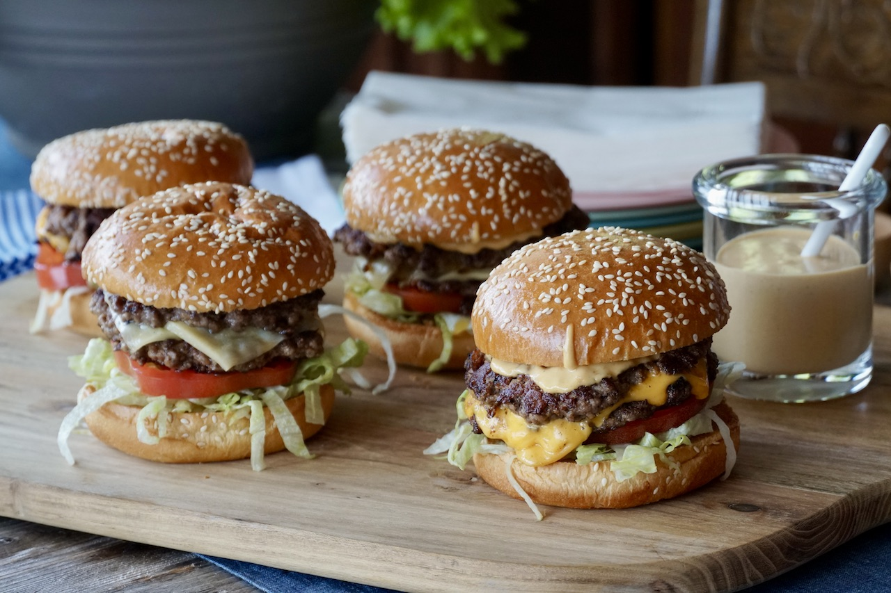

Smash Burgers

Let’s make our EASY SMASH BURGERS WITH SECRET SAUCE.
If the very thought of a tender, juicy, really well-made burger is what brought you here, let me just say, you’ve come to the right place. Not only do our delicious SMASH BURGERS deliver, the recipe is also in good company.
Ingredients
- burger meat
- buns
- veggies
- sauce
- salt
- pepper
Steps
- As mentioned, we’re suggesting you make your burger patties using lean ground beef. There’s no need to add anything to the beef, just a sprinkle of salt and pepper as they cook. The important prep step here is to weigh the patties. We crafted the recipe to yield four sandwiches. Each sandwich is made with two grilled patties, so you’ll need eight in total. Making 3-ounce patties, we needed 1½ pounds of beef. If you have a really famished crowd in your midst, pick up 2 pounds of lean ground beef so you can craft eight 4-ounce burgers.
- When portioning the meat for the patties, think of them as meatballs. We do it like the pros and use a kitchen scale to get uniform balls of hamburger meat. Once weighed, take the portion of meat and gently form it into a ball shape. The goal is a loose ball of beef, so don’t gather it up too firmly. Once the meatball-shaped portions of beef are all formed, cover and refrigerate until you’re ready to grill.
- The secret’s out and we couldn’t be more pleased. This special sauce is the only condiment required when serving our smash burgers, making the recipe even more simple. That said, we do understand that burgers are a personal thing, so think of this burger sauce as just the beginning and add any traditional toppings you might enjoy, such as sweet pickle relish, dill pickles, mustard and sliced onion. If you serve them with oven-baked potato wedges or french fries, have ketchup or mayonnaise on the side. Love it!
- I’ve given these two burger-friendly vegetables the moniker of “go-betweens”. When selecting your iceberg lettuce, try to find a head that looks quite green. Remove the central core before shredding it and keep it covered and refrigerated; it needs to stay crisp. For the tomato, if you’re crafting four burgers as we did, you just need one, so make it a beauty. I’m suggesting a vine-ripened heirloom or big juicy beefsteak tomato. Use one slice per sandwich, about ¼-inch thick.
- For best results, make sure to pick up the freshest hamburger buns you can find. This is not the time to be defrosting buns that have been languishing in the deep freeze for a number of months. Head to your favourite bakery or grocery store and look for superior buns with those gorgeous, glossy, sesame seed-studded tops. As I explain in the VIDEO for this recipe, buy standard-sized buns if making 3-ounce sized patties, or pick up the larger buns if your hungry crowd has you crafting 4-ounce patties. One last thing about the buns; toast and butter the tops and bottoms.